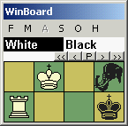
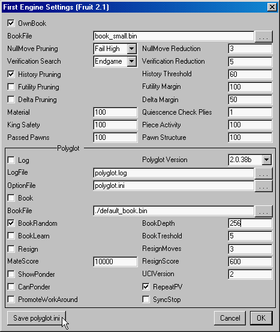

The WinBoard Gold Pack 4.5.0For the ultimate WinBoard experience! |  |
UCI engines need the Polyglot adapter to communicate with WinBoard. As far as WinBoard is concerned, Polyglot is the engine. Polyglot has to be instructed to which real engine it should 'connect', and it takes this information from a file, known as a polyglot.ini file. Apart from telling Polyglot which UCI engine to run, polyglot.ini also has to supply all paramter settings for this UCI engine that WinBoard doesn't. And UCI engines usually need a lot more support from their GUI than WinBoard engines. Polyglot has to fill in the gaps, again from information stored in the polyglot.ini file.
WinBoad 4.4.0 offers the possibility to configure UCI engines from its 'Engine' menu. To this end there are new menu items "Engine #1 Settings" and "Engine #2 Settings". (Note: the latter only works after you have indeed started up the second engine, by using it, as WinBoard initially will assume it runs with only one engine.) The Polyglot provided in the Gold Pack will pass on every UCI option the engine defines, using the new extensions of WinBoard protocol, and WinBoard will provide a control element for each option in the Engine-Settings dialog. This makes configuring UCI engines very simple.
All you have to do is start up the UCI engine like you would start a WinBoard engine, but telling WinBoard it is a UCI engine by including the option /fUCI or /sUCI (for first and second engine, respectively). In this example we have used Fruit 2.1 to demonstrate the procedure. In this case the command that you would have to type in the WinBoard startup dialog for the first engine would be:
"fruit_21" /fd="..\..\Fruit" /fUCI(the /fd option tells WinBoard where to find fruit_21.exe.) WinBoard 4.5.0 will then automatically invoke Polyglot as an adapter, providing it with enough information to find and fire up the engine, and tell it about the location of any tablebase on your system (at least, if you had told WinBoard these though the Global Settings dialog). After that you can use the "Engine #1 Settings" dialog to change any options you want, tell the engine the location of its own, private book file (if it has its own book), its log file, etc. Any changes you make will be sent to the engine as soon as you press OK.
We start with the Polyglot settings, which are displayed at the end of the dialog. These control tasks that Polyglot itself performs, and thus are available for any UCI engine. The first check box and text field only have to be completed if we want to make a log file (recording all communication between Polyglot and WinBoard), which makes little sense for normal use. (It is meant for debugging.) Skipping somewhat down we can control if Polyglot will resign on behalf of the engine, (UCI engines cannot resign by themselves), and what score it will display when the engine sees a checkmate. At the end there are a few options (ShowPonder, UCIVersion, CanPonder, RepeatPV, PromoteWorkAround and SyncStop) that are only important for engines with certain UCI compliancy problems.

We can select if Polyglot should use a book on behalf of the engine, and where to find this book file (which must be a book in Polyglot format). If you have Polyglot books you only want to use for this engine and not its opponent, you can browse to the book file here, and tick the Book option. Fruit downloads usually comes with an opening book called "book_small.bin", and we could type the pathname of that in the BookFile field, or browse to it. If the book is located in the Fruit folder, we could type "../Fruit/book_small.bin" here (without the quotes). All this is not really needed for Fruit, though, as Fruit is perfectly able to consult its own book. (Polyglot and Fruit use the same book format, as they are by the same author!) Some UCI engines come entirely without book capabilities, though, and for those a Polyglot book would come in handy, when you don't want them to make use of a shared GUI book.
The first part of the "Engine #1 Settings" dialog will look different for every engine, as it represents the engine-specific options. This makes it hard to say much about them here. Fruit 2.1, and many other engines, supports an own opening book, and you can set or disable it here. Most other parameters affect the evaluation, and thus playing style and strength of the engine. If you don't know what you are doing, it is very easy to wreck proper operation of the engine by changng the parameter values. Usually the default values are the optimal values. So the Golden Rule here is: only change something if you know what you are doing.
The last, and most important step is to save the settings we just made in a polyglot.ini file. At least, if next time we run the engine we want it to start with these modified settings. The Polyglot supplied with the Gold Pack provides a Save option, which will appear as a buttom on the last line of the dialog. Pressing this button will save the current settings (even when you have not confirmed them by pressing OK yet!). Near the beginning of the Polygot groupbox in the dialog, there is a filename type-in field OptionFile, and this is where Polyglot will save the settings. If it did not exist yet, it will be created. Bydefaul, the nameof the file would be derived from the engine name, and put in the _PG sub-folder of the WinBoard folder, where we can keep all engine settings for tidyness. (You could also save it in the engine folder, "..\Fruit".)
Nex time you use the engine, Polyglot will look in the default place to see if there are any settings saved from last time.
Of course you can add the engine line to the winboard.ini file, if you get tired of typing it every time in the stratup dialog. It can then be selected from the combobox in the startup dialog. You could also make a shortcut to specifically start up this engine, by adding its name as value for the /fcp option. (/fcp is shorthand for /firstChessProgram.) Like:
winboard -cp -fcp "polyglot _PG\fruit.ini" -scp "..."